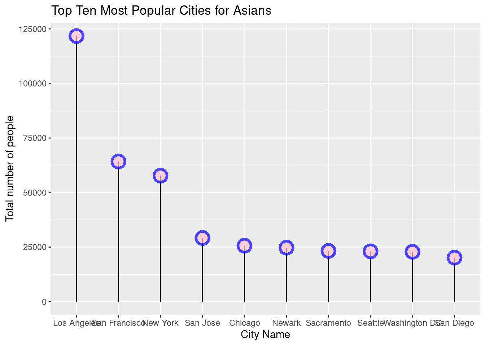
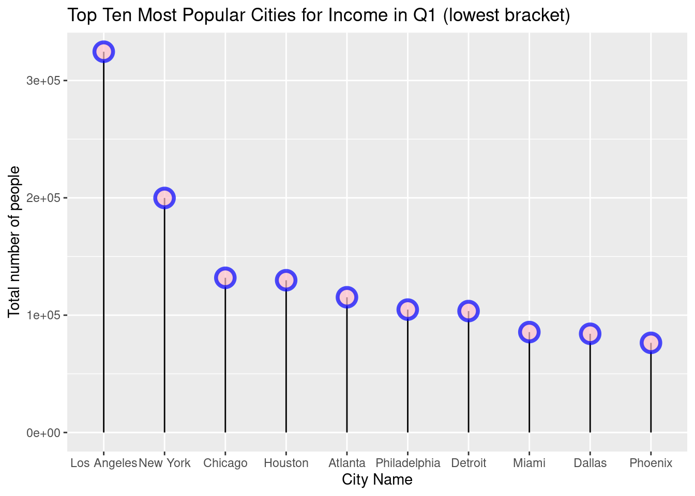
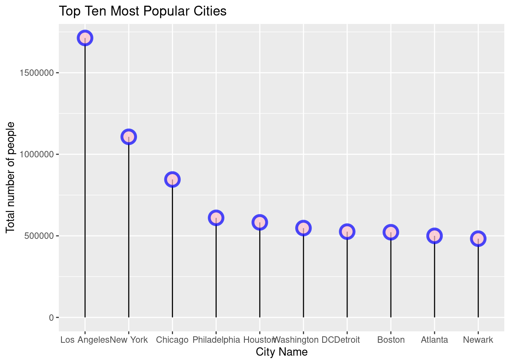

#import packages
library(tidyverse)Homework Assignment #2: Exploration of the data
Part II
Load in Datasets
#read in data
od <- read_csv("data/od.csv") #whole entire dataset combined into one
od_race <- read_csv("data/od_race.csv") #dataset separated by race
od_inc <- read_csv("data/od_inc.csv") #dataset separated by income percentiles
od_pooled <- read_csv("data/od_pooled.csv") #dataset technically not 'separated' by a specific factor
#view data: uncomment to view dataset
# View(od)
# View(od_race)
# View(od_inc)
# View(od_pooled)Data wrangling and cleaning
Here I will reshape the datasets to what I would like to output on the graph. I’ll go ahead and transform all four datasets for practice and to give me more flexibility for what I would like to create for my exploratory graphs.
# Most popular cities not separated by a certain factor
top_ten_pooled <- od_pooled %>% #using od_pooled
select(d_cz_name, d_state_name, n_tot_d, pool) %>%#select columns we are interested in, helps get rid of repeats
distinct() %>% #gets rid of repeats in the dataset
slice_max(n_tot_d, n = 10) #find the top 10 most popular cities if applicable
#view wrangled dataset: uncomment to view dataset
#View(top_ten_pooled)# Most popular cities separated by Race
top_ten_race <- od_race %>% #using od_race
select(d_cz_name, d_state_name, n_tot_d, pool) %>% #select columns we are interested in, helps get rid of repeats
group_by(pool) %>% # grouping by pool (in this case it is race)
distinct() %>% #gets rid of repeats in the dataset
slice_max(n_tot_d, n = 10) #find the top 10 most popular cities if applicable for each race
#view wrangled dataset: uncomment to view dataset
#View(top_ten_race)# Most popular cities separated by income
top_ten_inc <- od_inc %>% #using od_inc
select(d_cz_name, d_state_name, n_tot_d, pool) %>% #select columns we are interested in, helps get rid of repeats
group_by(pool) %>% # grouping by pool (in this case it is income percentiles)
distinct() %>% #gets rid of repeats in the dataset
slice_max(n_tot_d, n = 10) #find the top 10 most popular cities if applicable for each income percentile
#view wrangled dataset: uncomment to view dataset
#View(top_ten_inc)# Most popular cities separated by both race and income
top_ten_overall <- od %>% #using od
select(d_cz_name, d_state_name, n_tot_d, pool) %>% #select columns we are interested in, helps get rid of repeats
group_by(pool) %>% # grouping by pool (in this case it is both race and income)
distinct() %>% #gets rid of repeats in the dataset
slice_max(n_tot_d, n = 10) #find the top 10 most popular cities if applicable for race and income percentile
#view wrangled dataset: uncomment to view dataset
#View(top_ten_overall)Exploratory Graphs
In this section, I will go ahead and use the top_ten_inc, top_ten_pooled and top_ten_race datasets. This will provide me more flexibility being able to look at income percentiles for just one race, or look at the what cities are most popular per income with race as another variable I could observe. I will be able to also look at the trends overall with no specific variables impacting the overall trend.
#Graph one: Top 10 Cities for Asian race
top_ten_asian <- top_ten_race %>%
filter(pool == 'Asian') %>%
mutate(d_cz_name = forcats::fct_reorder(d_cz_name, desc(n_tot_d))) %>%
ggplot(aes(x = d_cz_name,
y = n_tot_d)) +
geom_segment(aes(x=d_cz_name, xend=d_cz_name, y=0, yend=n_tot_d)) +
geom_point( size=5, color="blue", fill=alpha("pink", 0.3), alpha=0.7, shape=21, stroke=2) +
labs(title = "Top Ten Most Popular Cities for Asians",
x = "City Name",
y = "Total number of people")
print(top_ten_asian)
#Graph two: Top 10 Cities for Income in Q1
top_ten_q_one <- top_ten_inc %>%
filter(pool == 'Q1') %>%
mutate(d_cz_name = forcats::fct_reorder(d_cz_name, desc(n_tot_d))) %>%
ggplot(aes(x = d_cz_name,
y = n_tot_d)) +
geom_segment(aes(x=d_cz_name, xend=d_cz_name, y=0, yend=n_tot_d)) +
geom_point( size=5, color="blue", fill=alpha("pink", 0.3), alpha=0.7, shape=21, stroke=2) +
labs(title = "Top Ten Most Popular Cities for Income in Q1 (lowest bracket)",
x = "City Name",
y = "Total number of people")
print(top_ten_q_one)
#Graph three: Top 10 Cities
top_ten_asian <- top_ten_pooled %>%
mutate(d_cz_name = forcats::fct_reorder(d_cz_name, desc(n_tot_d))) %>%
ggplot(aes(x = d_cz_name,
y = n_tot_d)) +
geom_segment(aes(x=d_cz_name, xend=d_cz_name, y=0, yend=n_tot_d)) +
geom_point( size=5, color="blue", fill=alpha("pink", 0.3), alpha=0.7, shape=21, stroke=2) +
labs(title = "Top Ten Most Popular Cities",
x = "City Name",
y = "Total number of people")
print(top_ten_asian)
Questions:
- What have you learned about your data? Have any potentially interesting patterns emerged? (5-8 sentences)
Answer: One thing that I learned about my data is how the most populated cities are same regardless of race or income. Looking at race, I only looked at where those whos race is asian resides. From my graph, I found that the most popular city, Los Angeles, is about twice as much as the next most popular city, San Fransisco. Looking at the graph that holds income for those in the Q1 percentile, the most popular city is Los Angeles once again. Reading the readme, I found out that the dataset contained information from 1984 to 1992. I also found out that noise was introduced to the dataset in order to satisfy the privacy requirements. It would be nice to know what sorts of events were happening in this time period where it created Los Angeles to be the most popular city to reside in.
- In HW #1, you outlined some questions that you wanted to answer using these data. Have you made any strides towards answering those questions? If yes, how so? If no, what next steps do you need to take (e.g. I need to create X plot type, I still need to track down Y data, I need to restructure existing data so that you can visualize it in Z ways, etc.)? (8-12 sentences)
Answer: I have made a small step in answering the questions I asked in the HW #1. In my original question, I wondered what the top 5 cities were that were most popular to move to. In this assignment, I only answered the question of what the top ten cities that housed the most amount of people. One issue I had trouble with is understanding the variables in the dataset. While there is a Data Dictionary metadata that is associated with this dataset. Because of my confusion with the metadata, I wasn’t able to create a graph relating to my original question. In order to be able to visually graph my original question, I’ll need to read more external information on how to interpret my original question. Currently, however, I believe a lollipop graph is a visualization method that I’ll keep as it is able to show the maximum point clearly as well as making it easy for the audience to understand how to interpret the graph.
- What challenges do you foresee encountering with your data? These can be data wrangling and / or visualization challenges. (4-6 sentences)
Answer: Like I mentioned before, I think understanding the Data dictionary provided with the data is hard to understand. Another challenge that I believe I may face is choosing if I want to highlight a certain city on my graph. I would have to think about what city I want to highlight and create a small text bubble besides that highlighted city stating a reason why it is on the graph. This could be that there was a major event that happened between 1984 to 1992 that caused a lot of young adults to move to that particular city. Finding that information would be a challenge but one that is achievable.